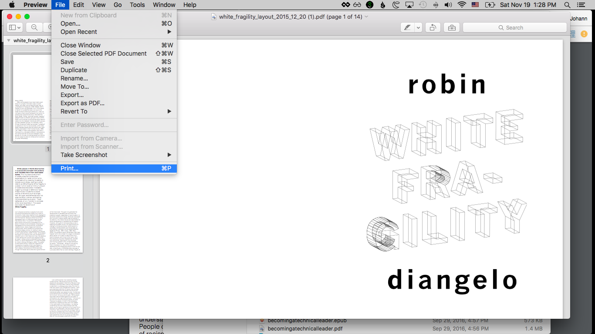
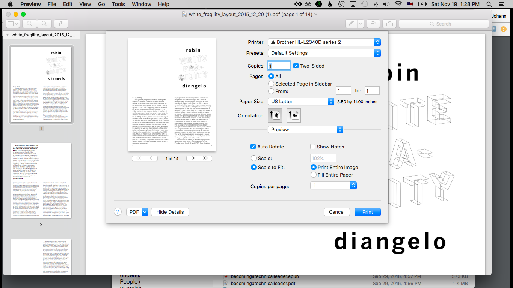
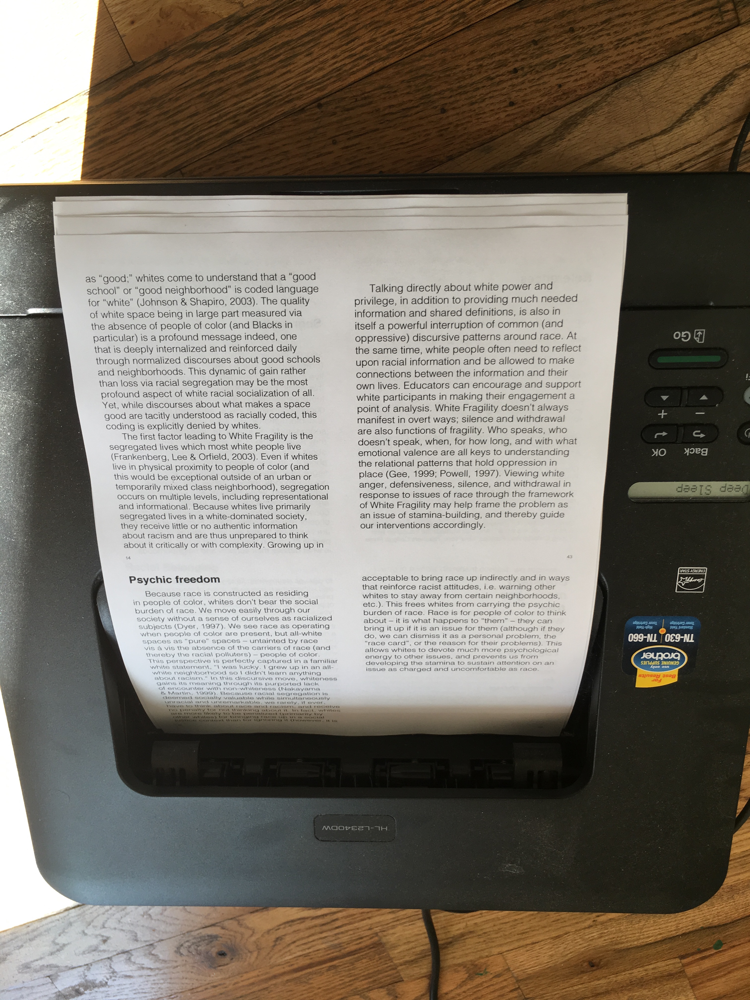
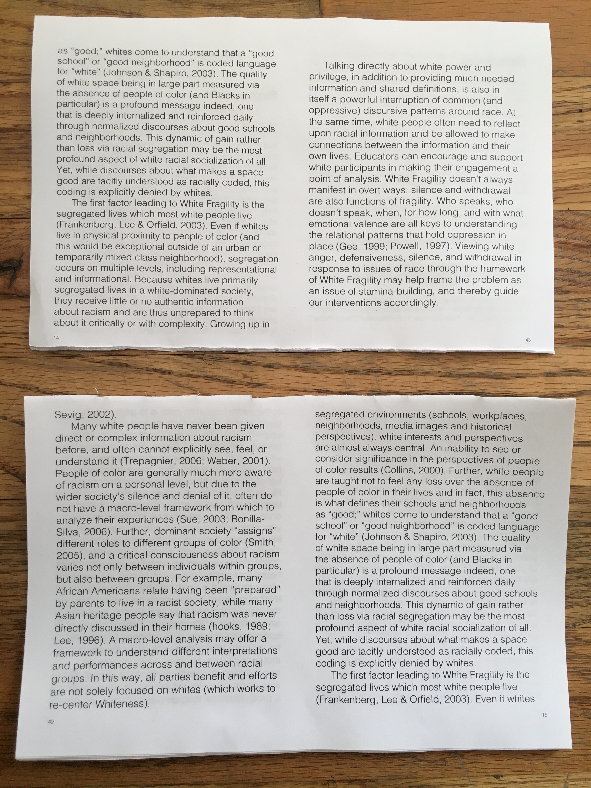
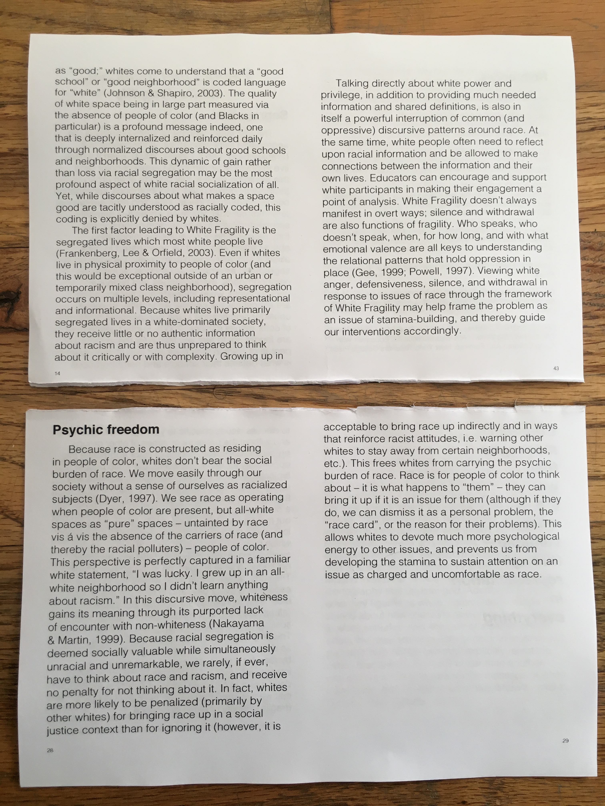
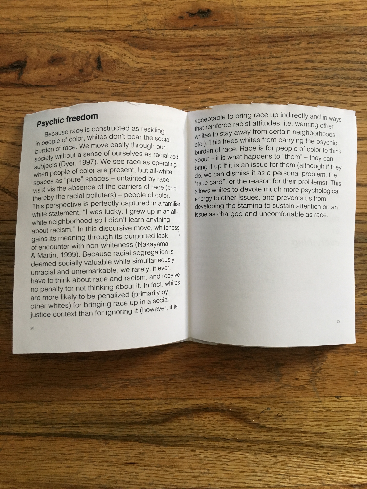
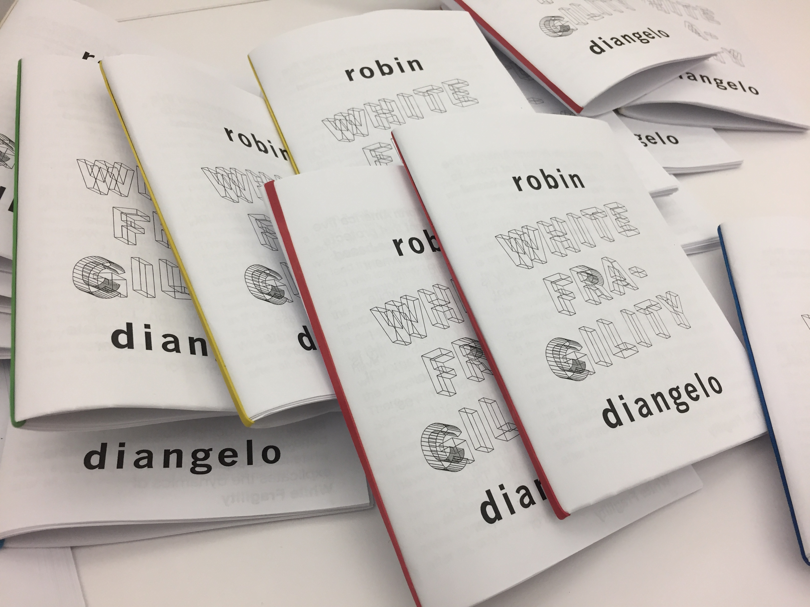

Instruction:
(There were done on a Mac, but should be easy to follow on other kinds of computers)
Tools:
Printer that is able to do double sided printing (we recommend this printer, it's pretty afforable! [link to Amazon printer])
Paper
Ink
Stapler
Scissors / some way to cut
Download PDF here:
Go to File->Print

Make sure to check the box for two sided printing

Print!
Your zine will come out like this.

Flip the pages over so the front cover is facing you, along with pages 42 and 15)

Cut the pages in half horizontally so you have a top portion and a bottom portion, like this:

Flip over the top portion of the zine so pages 14 and 43 are showing:

Flip over the bottom portion as well, so that page 28 (Psychic Freedom) and 29 are showing:

Place the bottom half on top of the bottom half so that pages 28 and 29 are showing.
Fold the booklet in half and notice all the pages are in the right order!

Use a stapler (or rubber bands!) to bind the binding together

Share the zine with your friend! Make another for someone else!